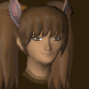

Summer

Website Developer
|
12 March 2022 00:08
A Back to back update to bring even more fixes to 2009scape. More focus on creating a structure within the development with some
few changes.
Updates from the firey furnace
- Blast Furnace now saves the oreinpot attribute, fixing the bug of people not being able to smelt if they fill the Blast Furnace with ore and coal and logging out before smelting
- Temporarily disabling Blast Furnace.
Bot Fixes
- Temporarily disabled green dragon bots pending economical changes.
A Few Additions
- Added bones drops to Flockleader Geerin and Wingman Skree.
- Added positional audio support.
- Added positional audio for combat and cannons.
- The command list is now sorted in alphabetical order.
- Admins can now kill themselves with ::killme.
- Implemented make-x for potatoes/pizzas/breads.
- Can now catch implings with use of a hunter potion.
- Can now trade in Long and Curved bones to Barlak in the Dorgeshuun Mine (temporary location for now) for Construction EXP (after completion of The Lost Tribe)
- Ridiculous amounts of funky fresh new NPC dialogues by Q in the following areas: LLetya, Isafdar, Ardougne, Witchaven, Ape Atoll, Miscellania, Dorgeshuun, Zanaris and many many many more!
- All currently functional Summoning familiars with invisible skills boosts are now correctly added to the game! Pyrelord, Forge Regent, Arctic Bear, Lava Titan, Magpie, Spirit Graahk, Spirit Larupia, Spirit Kyatt, Void Ravager and Wolpertinger now boost skills alongside their other helpful abilities
- Hostile Random Events return! Tree Spirit, River Troll, Rock Golem, Shade, and Zombie Hostile Random Events rejoin the Evil Chicken in their AFK-anihilation onslaught! Beware!
- Can now fish slimy eels.
Who is digging these holes?
- Giant Mole's Burrow mechanic corrected in functionality. Burrow: When the mole's health is between 5-50%, there is a 25% chance for any incoming attack to cause it
to burrow away into another location. There is also a chance that the dirt she digs while burrowing to escape can extinguish the player's light source
(shown with dirt splatters on the player's screen), though covered light sources will be unaffected by this.
- Mole Lair's unique music track now correctly plays across the entirety of the Mole Lair region.
-
Giant Mole droptable corrected. Egregious RSPS noted secondary drops removed. G. Mole can now correctly drop random Hard Clues, and the 100 Iron Ore (noted) drop has been added.
Some Bug Fixes
- Fixed cannons spamming chat about how you're already in combat or that they can't attack your familiar.
- Saradomin brews can now lower stats all the way to zero.
- Fixed timing of stat decrementing.
- Improved Nechryaels' death spawn multicombat handling.
- DFS now works on skeletal wyverns' ice breath.
- Fixed bug where quest progress could revert.
- Fixed doors getting stuck "in use".
- Fixed defense potion requirements - now requires white berries instead of fur.
- Changed bone spear from 2 handed to 1 handed.
- Items can now be dropped and used in pyramid plunder.
- Oil lantern firemaking requirement changed from 29 to 26.
- Removed Chaeldar's slayer requirement.
- The plank make lunar spell was rewritten and is now authentic and has sound effects.
- Failing to enter gwd boss room no longer consumes faction kill count.
- Improved silver smelting (with moulds) pulse handling.
- Birds Nest's loot pools are updated.
- Fixed tick delay on Fletching bows and crossbows.
- Restricted Dwarven Multicannon use inside Fremennik Slayer Cave.
- Fixed pest control deaths sometimes respawning in Lumbridge.
- Fixed Ogre and Lesser Demon slayer tasks using boss names.
- Improved the behavior of trying to interact with moving entities (such as tool leprechauns, pick-pocketing farmers, etc.)
- Barrows prayer drain timer standardized to 18 seconds.
- Potion decanting note bug should now be fixed and not eat up all your notes when attempting to decant.
- All Ancient Warriors' Equipment (Vesta, Zuriel etc) is now correctly tradeable and droppable in its un-degraded form.
- Fixed blanket Wilderness aggression forcing even non-aggressive monsters to be aggressive.
- The Mining Guild can now be entered under 60 Mining via the use of skill boosts.
Can you hear it now?
- Fixed the Giant mole's combat sfx.
- Fixed the Water elemental's combat sfx.
- Fixed the Fire elemental's combat sfx.
- Fixed the Earth elemental's combat sfx.
- Fixed the Air elemental's combat sfx.
- Fixed the Baby blue dragon's combat sfx.
- Fixed the Baby red dragon's combat sfx + examine.
- Fixed the Baby black dragon combat sfx.
- Fixed the Black demon's combat sfx.
- Fixed the Dark beast combat sfx.
- Fixed the Dust devil combat sfx.
- Fixed the Gargoyle combat sfx.
- Fixed the Fire giant combat sfx.
- Fixed the Moss giant combat sfx.
- Fixed the Hill giant combat sfx.
- Fixed the Nechryael combat sfx.
- Fixed the Turoth combat sfx.
- Fixed the Kurask combat sfx.
- Fixed the Wallasalki combat sfx.
- Fixed the Yak combat sfx.
- Fixed the Abyssal demon combat sfx.
- Fixed the Bloodveld combat sfx.
- Fixed the Cave crawler's combat sfx.
- Digging with spade SFX added.
- Fixed the Abyssal leech's combat sfx.
- Fixed the Abyssal walker's combat sfx.
- Fixed the Void brawler's combat sfx.
- Fixed the Chaos elemental's standard combat sfx but not including the spells.
- Fixed the Cockatrice's combat sfx
- Fixed the Crawling hand's combat sfx.
- Fixed the Crocodile's combat sfx.
- Fixed the Void defiler's combat sfx
- Fixed the Lesser demon's champion combat sfx.
- Fixed the Elf warrior's combat sfx.
- Fixed the Ghoul combat's sfx.
- Fixed the Ghoul champion's combat sfx.
- Fixed the Pyrefiend's combat sfx.
- Fixed the Jelly's combat sfx.
- Fixed the Void ravager's combat sfx.
- Fixed the Rock lobster's combat sfx.
- Fixed the Rockslug's combat sfx.
- Fixed the Void shifter's combat sfx.
- Fixed the Void spinner's combat sfx.
- Fixed the Void splatter's combat sfx.
- Fixed the Void torcher's combat sfx.
- Fixed the Starlight's combat sfx.
- Fixed the Growler's combat sfx.
- Fixed picking herb/harvesting crop SFX added.
- Fixed planting a seed with seed dibber SFX added.
- Fixed digging up patch with a Spade SFX added.
- Fixed raking a patch SFX added.
- Fixed watering a farming patch with a Watering can SFX added.
- Fixed Using a Plant Cure on a diseased patch SFX added.
- Fixed the pouring Compost/Supercompost on a farming patch SFX added.
- Fixed the filling Compost Bin SFX added.
- Fixed pening and closing the Compost Bin SFX added.
- Fixed filling buckets with Compost from the Compost Bin SFX added.
- Fixed the Chaos Elemental's three unique spells (Discord, Madness, and Confusion) now have correct impact sfx when hitting the player.
Quests
- Get Ready to help the monks get undrunk to get drunk in their latest balloon party( without the balloons ) Monk's Friend Quest was implemented.
- Get closer to stealing Thor's Hammer and being the new ring keeper with the pointy helm fellers. Fremmenik Trial's Quest is now implemented.
Cache Changes
- Added A Rsps-like Summoning Obelisk in Player Owned houses.
- Added right-click options for the mounted glory.
Behind the Scenes
- Refactored god item definitions to be more general purpose.
- Updated documentation to reference new server config file type.
- Add InteractionListener.onUseWithWildcard.
- Rewrote the water sources plugin into a listener and properly handled wells.
|
 Up to Legacy Update List
Up to Legacy Update List